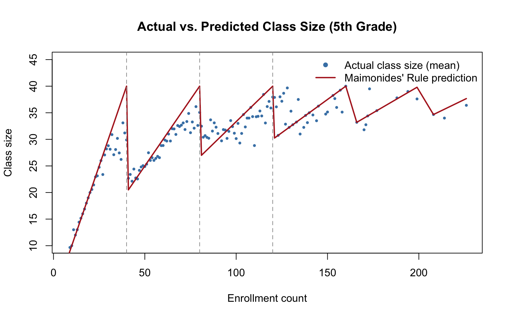

Code
library(haven)
library(fixest)
library(estimatr)
library(modelsummary)
library(kableExtra)Yafei (Judie) Zhang
April 21, 2025
Does reducing class size improve student achievement? It sounds like an easy question. Get data on class sizes and test scores, run a regression, done. Right?
Not really. The issue is that class size isn’t random. Wealthier districts hire more teachers. Engaged parents lobby for smaller classes. Struggling schools sometimes get extra funding that shrinks their classes too. So when you compare test scores across different class sizes, you’re also comparing all these other things at the same time. The estimate is biased, and you can’t tell how much.
Angrist and Lavy (1999) found a way around this using something I genuinely didn’t expect: a rule from a 12th-century rabbi. In Israel, Maimonides’ Rule caps class sizes at 40 students. When a school’s enrollment crosses a multiple of 40, it must split into an additional class. A school with 40 kids has one class of 40. A school with 41 kids suddenly has two classes of about 20.
That jump has nothing to do with how good the school is or how wealthy the families are. It’s just arithmetic. And that makes it useful as an instrumental variable, because it gives us variation in class size that’s driven entirely by an administrative cutoff, not by the usual confounders.
The authors use this to estimate the causal effect of class size on reading and math scores for 4th and 5th graders in Israeli public schools. I replicated their analysis in R.
The data are class-level observations for 4th and 5th graders in Israeli public schools. I followed the original Stata replication code for the cleaning steps: fixing score values above 100, constructing the Maimonides’ Rule prediction (enrollment divided by the number of classes the rule requires), and applying the same sample restrictions.
clean_data <- function(filepath) {
df <- read_dta(filepath, encoding = "latin1")
# Fix scores > 100 (same as Stata: replace avg = avg - 100 if avg > 100)
df$avgverb[df$avgverb > 100 & !is.na(df$avgverb)] <-
df$avgverb[df$avgverb > 100 & !is.na(df$avgverb)] - 100
df$avgmath[df$avgmath > 100 & !is.na(df$avgmath)] <-
df$avgmath[df$avgmath > 100 & !is.na(df$avgmath)] - 100
# Maimonides' Rule: predicted class size
df$func1 <- df$c_size / (floor((df$c_size - 1) / 40) + 1)
df$func2 <- df$cohsize / (floor(df$cohsize / 40) + 1)
# Set scores to NA if test sample size is 0
df$avgverb[df$verbsize == 0] <- NA
df$passverb[df$verbsize == 0] <- NA
df$avgmath[df$mathsize == 0] <- NA
df$passmath[df$mathsize == 0] <- NA
# Sample restrictions (same as Stata)
df <- df[df$classize > 1 & df$classize < 45 & df$c_size > 5, ]
df <- df[df$c_leom == 1 & df$c_pik < 3, ]
return(df)
}
grade5 <- clean_data("../../dataverse_files/final5.dta")
grade4 <- clean_data("../../dataverse_files/final4.dta")
cat("5th graders: n =", nrow(grade5), "\n")5th graders: n = 2024 4th graders: n = 2053 A quick note on what to expect: point estimates should match the published tables closely, but standard errors may not be exact. Angrist and Lavy use Moulton-corrected standard errors clustered by school, while I’m using fixest’s cluster-robust standard errors, which handle the clustering slightly differently. This is a known issue in replications of this paper and doesn’t affect the substantive conclusions.
The main analysis in the paper is a two-stage least squares (2SLS) estimation. The logic goes like this:
But before getting to the IV results, it’s worth seeing what plain OLS gives us, because the contrast is the whole point.
These regressions just relate test scores to actual class size, adding controls progressively.
NOTE: 5 observations removed because of NA values (LHS: 5).NOTE: 5 observations removed because of NA values (LHS: 5).NOTE: 5 observations removed because of NA values (LHS: 5).NOTE: 6 observations removed because of NA values (LHS: 6).NOTE: 6 observations removed because of NA values (LHS: 6).NOTE: 6 observations removed because of NA values (LHS: 6).NOTE: 4 observations removed because of NA values (LHS: 4).NOTE: 4 observations removed because of NA values (LHS: 4).NOTE: 4 observations removed because of NA values (LHS: 4).NOTE: 4 observations removed because of NA values (LHS: 4).NOTE: 4 observations removed because of NA values (LHS: 4).NOTE: 4 observations removed because of NA values (LHS: 4).modelsummary(
list("Reading (1)" = t2_5v1, "Reading (2)" = t2_5v2, "Reading (3)" = t2_5v3,
"Math (4)" = t2_5m1, "Math (5)" = t2_5m2, "Math (6)" = t2_5m3),
stars = c('*' = 0.1, '**' = 0.05, '***' = 0.01),
coef_map = c("classize" = "Class size", "tipuach" = "Percent disadvantaged",
"c_size" = "Enrollment"),
gof_map = c("nobs", "r.squared"),
title = "Table II, Panel A: 5th Grade OLS Estimates"
)| Reading (1) | Reading (2) | Reading (3) | Math (4) | Math (5) | Math (6) | |
|---|---|---|---|---|---|---|
| * p < 0.1, ** p < 0.05, *** p < 0.01 | ||||||
| Class size | 0.221*** | -0.031 | -0.025 | 0.322*** | 0.076** | 0.019 |
| (0.034) | (0.026) | (0.033) | (0.040) | (0.036) | (0.042) | |
| Percent disadvantaged | -0.350*** | -0.351*** | -0.340*** | -0.332*** | ||
| (0.014) | (0.015) | (0.018) | (0.019) | |||
| Enrollment | -0.002 | 0.017** | ||||
| (0.006) | (0.008) | |||||
| Num.Obs. | 2019 | 2019 | 2019 | 2018 | 2018 | 2018 |
| R2 | 0.035 | 0.367 | 0.367 | 0.048 | 0.248 | 0.251 |
modelsummary(
list("Reading (7)" = t2_4v1, "Reading (8)" = t2_4v2, "Reading (9)" = t2_4v3,
"Math (10)" = t2_4m1, "Math (11)" = t2_4m2, "Math (12)" = t2_4m3),
stars = c('*' = 0.1, '**' = 0.05, '***' = 0.01),
coef_map = c("classize" = "Class size", "tipuach" = "Percent disadvantaged",
"c_size" = "Enrollment"),
gof_map = c("nobs", "r.squared"),
title = "Table II, Panel B: 4th Grade OLS Estimates"
)| Reading (7) | Reading (8) | Reading (9) | Math (10) | Math (11) | Math (12) | |
|---|---|---|---|---|---|---|
| * p < 0.1, ** p < 0.05, *** p < 0.01 | ||||||
| Class size | 0.141*** | -0.053* | -0.040 | 0.221*** | 0.055 | 0.009 |
| (0.035) | (0.028) | (0.032) | (0.039) | (0.036) | (0.040) | |
| Percent disadvantaged | -0.339*** | -0.341*** | -0.289*** | -0.281*** | ||
| (0.015) | (0.016) | (0.017) | (0.017) | |||
| Enrollment | -0.004 | 0.014** | ||||
| (0.006) | (0.007) | |||||
| Num.Obs. | 2049 | 2049 | 2049 | 2049 | 2049 | 2049 |
| R2 | 0.013 | 0.309 | 0.309 | 0.025 | 0.204 | 0.207 |
Look at the OLS coefficient on class size. In several specifications it’s positive or insignificant, suggesting bigger classes go with higher scores. That doesn’t make sense on its face. But it does make sense if you think about where big classes come from: larger schools in more urban, better-resourced areas. OLS is picking up the school’s environment, not the class size effect.
This is the table I was most interested in replicating. I instrument actual class size with the rule’s prediction and estimate specifications with progressively richer controls: percent disadvantaged, enrollment, enrollment squared, and a piecewise-linear enrollment trend. I also restrict to a “discontinuity sample” of schools with enrollment near the cutoffs (36-45, 76-85, 116-125), where the jump in predicted class size is sharpest.
# Create discontinuity sample indicator
grade5$disc <- with(grade5,
(c_size >= 36 & c_size <= 45) | (c_size >= 76 & c_size <= 85) |
(c_size >= 116 & c_size <= 125))
grade4$disc <- with(grade4,
(c_size >= 36 & c_size <= 45) | (c_size >= 76 & c_size <= 85) |
(c_size >= 116 & c_size <= 125))
g5 <- grade5[!is.na(grade5$avgverb), ]
g4 <- grade4[!is.na(grade4$avgverb), ]
# Additional variables
g5$c_size2 <- (g5$c_size^2) / 100
# Piecewise linear trend (as in Stata code)
g5$trend <- NA
g5$trend[g5$c_size >= 0 & g5$c_size <= 40] <- g5$c_size[g5$c_size >= 0 & g5$c_size <= 40]
g5$trend[g5$c_size >= 41 & g5$c_size <= 80] <- 20 + g5$c_size[g5$c_size >= 41 & g5$c_size <= 80] / 2
g5$trend[g5$c_size >= 81 & g5$c_size <= 120] <- 100/3 + g5$c_size[g5$c_size >= 81 & g5$c_size <= 120] / 3
g5$trend[g5$c_size >= 121 & g5$c_size <= 160] <- 130/3 + g5$c_size[g5$c_size >= 121 & g5$c_size <= 160] / 4
run_2sls <- function(df, dvar) {
m1 <- feols(as.formula(paste(dvar, "~ tipuach | classize ~ func1")),
data = df, cluster = ~schlcode)
m2 <- feols(as.formula(paste(dvar, "~ tipuach + c_size | classize ~ func1")),
data = df, cluster = ~schlcode)
m3 <- feols(as.formula(paste(dvar, "~ tipuach + c_size + c_size2 | classize ~ func1")),
data = df, cluster = ~schlcode)
m4 <- feols(as.formula(paste(dvar, "~ trend | classize ~ func1")),
data = df, cluster = ~schlcode)
disc_df <- df[df$disc == TRUE, ]
m5 <- feols(as.formula(paste(dvar, "~ tipuach | classize ~ func1")),
data = disc_df, cluster = ~schlcode)
m6 <- feols(as.formula(paste(dvar, "~ tipuach + c_size | classize ~ func1")),
data = disc_df, cluster = ~schlcode)
list(full1 = m1, full2 = m2, full3 = m3, full4 = m4, disc1 = m5, disc2 = m6)
}
t4_verb <- run_2sls(g5, "avgverb")NOTE: 58 observations removed because of NA values (RHS: 58).NOTE: 1 observation removed because of NA values (LHS: 1).NOTE: 1 observation removed because of NA values (LHS: 1).
NOTE: 1 observation removed because of NA values (LHS: 1).NOTE: 59 observations removed because of NA values (LHS: 1, RHS: 58).modelsummary(
list("Full (1)" = t4_verb$full1, "Full (2)" = t4_verb$full2,
"Full (3)" = t4_verb$full3, "Full (4)" = t4_verb$full4,
"Disc (5)" = t4_verb$disc1, "Disc (6)" = t4_verb$disc2),
stars = c('*' = 0.1, '**' = 0.05, '***' = 0.01),
coef_map = c("fit_classize" = "Class size (instrumented)",
"tipuach" = "Percent disadvantaged",
"c_size" = "Enrollment", "c_size2" = "Enrollment sq/100",
"trend" = "Piecewise trend"),
gof_map = c("nobs", "r.squared"),
title = "Table IV: 2SLS Estimates, 5th Grade Reading Scores"
)| Full (1) | Full (2) | Full (3) | Full (4) | Disc (5) | Disc (6) | |
|---|---|---|---|---|---|---|
| * p < 0.1, ** p < 0.05, *** p < 0.01 | ||||||
| Class size (instrumented) | -0.158*** | -0.277*** | -0.263*** | -0.190 | -0.410*** | -0.582*** |
| (0.042) | (0.076) | (0.094) | (0.122) | (0.118) | (0.206) | |
| Percent disadvantaged | -0.371*** | -0.369*** | -0.369*** | -0.477*** | -0.461*** | |
| (0.016) | (0.016) | (0.016) | (0.049) | (0.047) | ||
| Enrollment | 0.022** | 0.013 | 0.053* | |||
| (0.009) | (0.026) | (0.032) | ||||
| Enrollment sq/100 | 0.004 | |||||
| (0.010) | ||||||
| Piecewise trend | 0.137*** | |||||
| (0.036) | ||||||
| Num.Obs. | 2019 | 2019 | 2019 | 1961 | 471 | 471 |
| R2 | 0.374 | 0.375 | 0.376 | 0.034 | 0.421 | 0.421 |
modelsummary(
list("Full (1)" = t4_math$full1, "Full (2)" = t4_math$full2,
"Full (3)" = t4_math$full3, "Full (4)" = t4_math$full4,
"Disc (5)" = t4_math$disc1, "Disc (6)" = t4_math$disc2),
stars = c('*' = 0.1, '**' = 0.05, '***' = 0.01),
coef_map = c("fit_classize" = "Class size (instrumented)",
"tipuach" = "Percent disadvantaged",
"c_size" = "Enrollment", "c_size2" = "Enrollment sq/100",
"trend" = "Piecewise trend"),
gof_map = c("nobs", "r.squared"),
title = "Table IV: 2SLS Estimates, 5th Grade Math Scores"
)| Full (1) | Full (2) | Full (3) | Full (4) | Disc (5) | Disc (6) | |
|---|---|---|---|---|---|---|
| * p < 0.1, ** p < 0.05, *** p < 0.01 | ||||||
| Class size (instrumented) | -0.013 | -0.231** | -0.264** | -0.205 | -0.185 | -0.443* |
| (0.058) | (0.099) | (0.123) | (0.145) | (0.155) | (0.251) | |
| Percent disadvantaged | -0.355*** | -0.350*** | -0.350*** | -0.459*** | -0.435*** | |
| (0.020) | (0.020) | (0.020) | (0.052) | (0.050) | ||
| Enrollment | 0.041*** | 0.063* | 0.079** | |||
| (0.012) | (0.036) | (0.037) | ||||
| Enrollment sq/100 | -0.010 | |||||
| (0.014) | ||||||
| Piecewise trend | 0.194*** | |||||
| (0.043) | ||||||
| Num.Obs. | 2018 | 2018 | 2018 | 1960 | 471 | 471 |
| R2 | 0.246 | 0.254 | 0.254 | 0.055 | 0.296 | 0.305 |
Compare these to the OLS table above. The sign on class size flips. Once we isolate the variation that comes from the administrative cutoff, the estimated effect is negative and significant: smaller classes improve scores. OLS had it backwards because of all the confounding I mentioned earlier. Seeing both tables side by side made the case for IV estimation click for me in a way that reading about it in a textbook never quite did.
I wanted to go beyond the tables and actually see why this instrument works. So I plotted actual class size against predicted class size (from Maimonides’ Rule) across different enrollment counts.
# Collapse to enrollment-level means
agg5 <- aggregate(cbind(classize, func1) ~ c_size, data = g5, FUN = mean)
plot(agg5$c_size, agg5$classize,
pch = 16, cex = 0.6, col = "steelblue",
xlab = "Enrollment count", ylab = "Class size",
main = "Actual vs. Predicted Class Size (5th Grade)",
ylim = c(10, 45))
lines(agg5$c_size[order(agg5$c_size)], agg5$func1[order(agg5$c_size)],
col = "firebrick", lwd = 2)
abline(v = c(40, 80, 120), lty = 2, col = "gray60")
legend("topright", legend = c("Actual class size (mean)", "Maimonides' Rule prediction"),
pch = c(16, NA), lty = c(NA, 1), lwd = c(NA, 2),
col = c("steelblue", "firebrick"), bty = "n")
The sawtooth shape in the red line is the whole story. At enrollment counts just above 40, 80, and 120, predicted class size drops sharply because the school has to add another class. The blue dots (actual class sizes) follow this prediction loosely, with a lot of scatter. That scatter is fine. It means the first stage is strong enough to predict class size, and there’s real variation for the second stage to work with.
I think this is my favorite part of the paper. You can stare at regression tables all day, but seeing the jumps in the plot makes it obvious why the instrument works. The rule doesn’t care about school quality or family income. It just counts kids and divides by 40. And that mechanical, almost boring feature is exactly what gives the study its credibility.